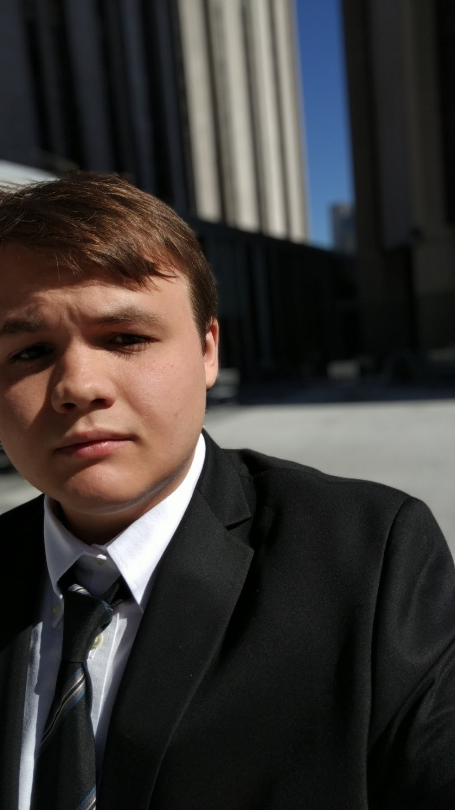

This website was made for ENGCMP 0610 Composing Digital Media (Spring 2021) entirely from scratch with no template usage.
This website's source is available here on the gh-pages branch.
Check out my other projects on my GitHub. My personal website is also available here.